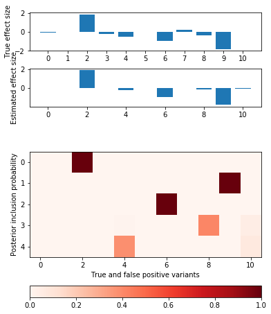

Finemapping idea
Table of Contents
1 Setup
sbatch --partition=broadwl --mem=16G --time=36:00:00 --job-name=ipython3 --output=ipython3.out #!/bin/bash source activate nwas rm -f $HOME/.local/share/jupyter/runtime/kernel-aksarkar.json ipython3 kernel --ip=$(hostname -i) -f kernel-aksarkar.json
%matplotlib inline import matplotlib.pyplot as plt import nwas import numpy as np import tensorflow as tf
2 Simulated data and existing method
with nwas.simulation.simulation(p=1000, pve=0.5, annotation_params=[(10, 1)], seed=0) as s: x, y = s.sample_gaussian(n=500) x = x.astype('float32') y = y.reshape(-1, 1).astype('float32')
opt = nwas.sgvb.gaussian_spike_slab(x, y, stoch_samples=10) plt.clf() q = np.logical_or(s.theta != 0, opt[0].ravel() > 0.1) fig, ax = plt.subplots(3, 1, sharex=True) fig.set_size_inches(6, 8) ax[0].bar(np.arange(np.sum(q)), s.theta[q]) ax[0].set_ylabel('True effect size') ax[1].bar(np.arange(np.sum(q)), opt[1].ravel()[q]) ax[1].set_ylabel('Estimated effect size') ax[2].bar(np.arange(np.sum(q)), opt[0].ravel()[q]) ax[2].set_ylabel('Posterior inclusion probability') ax[2].set_xlabel('True and false positive variants')
<matplotlib.text.Text at 0x2b137360ec18>

3 Proposed model
Revise the notation, using Latin for the model and Greek for the variational approximation.
\[ p(y \mid x, \mathbf{w}) = N(y; x \mathbf{w}', v^{-1} \mathbf{I}) \] \[ \mathbf{w} = \sum_k z_{kj} b_{kj} \] \[ p(z_k) = \mathrm{Multinomial}(1, \mathbf{p}) \] \[ p(b_{kj}) = N(0, v_b^{-1}) \] \[ q(z_k) = \mathrm{Multinomial}(1, \mathbf{\pi}) \] \[ q(b_{kj}) = N(\mu_{kj}, \phi_{kj}^{-1}) \]
4 Coordinate ascent
Between the old approximation and this approximation, the only difference is \(KL\left(q(z)\Vert p(z)\right)\), but it has the same form:
\[ KL = \sum_k E_q[\ln q(z_k) - \ln p(z_k)] \] \[= \sum_k \left[\sum_j \pi_{kj} \ln \pi_{kj} - \sum_j \pi_{kj} \ln p_{kj}\right] \] \[= \sum_{j,k} \pi_{kj} \left( \ln \pi_{kj} - \ln p_{kj} \right) \]
This suggests that simply using the same update as the spike-and-slab version will work.
def coordinate_ascent(x, y, effect_var, residual_var, l=5, num_epochs=100): n, p = x.shape pi = np.ones((p, 1)) d = np.einsum('ij,ij->j', x, x).reshape(-1, 1) xy = x.T.dot(y) pip = np.zeros((l, p)) mean = np.zeros((l, p)) eta = np.dot(x, (pip * mean).sum(axis=0, keepdims=True).T) for _ in range(num_epochs): for k in range(l): eta -= np.dot(x, (pip * mean)[k:k + 1].T) var = effect_var * residual_var / (effect_var * d + 1) mean[k:k + 1] = (var / residual_var * (xy - x.T.dot(eta))).T pip[k:k + 1] = (pi * np.exp(.5 * (np.log(var / (effect_var * residual_var)) + np.square(mean[k:k + 1].T) / var))).T pip[k] /= pip[k].sum() eta += np.dot(x, (pip * mean)[k:k + 1].T) return pip, mean, var opt1 = coordinate_ascent(x, y, 1, s.residual_var)
plt.clf() fig, ax = plt.subplots(2, 1, sharex=True) fig.set_size_inches(6, 8) ax[0].bar(np.arange(np.sum(q)), s.theta[q]) ax[0].set_ylabel('True effect size') im = ax[1].imshow(opt1[0][:,q], cmap='Reds') ax[1].set_ylabel('One-hot causal SNP indicators') ax[1].set_xlabel('True and false positive variants') cbar = plt.gcf().colorbar(im, ax=ax[1], orientation='horizontal') cbar.ax.set_xlabel('Posterior inclusion probability')
<matplotlib.text.Text at 0x2b137ca26a58>

Open question: If this term has the same form as the spike-and-slab version (take Bernoulli to be Multinomial with two classes), then is it really going to give a different answer?
Open question: Why is \(\beta\) not shared?
Open question: Can we just use \(\mathrm{Multinomial}(l, \pi)\) ?
5 Direct optimization with SGD
6 Relaxation of Categorical variables
In order to make the model amenable to SGVB, we could use the ExpConcrete distribution (Maddison et al 2017, Jang et al 2017) in place of the Categorical distribution.
This will be important for using it as a building block in larger models.
def exp_concrete_llik(y, weights, temperature): """Appendix C.3""" # This hack is needed because the type of y.shape isn't Tensor n = float(int(y.shape[-1])) return (tf.lgamma(n) + (n - 1.) * tf.log(temperature) + # Sum on the event dimension, leaving [stoch_samples, l] tf.reduce_sum(tf.nn.log_softmax(tf.log(weights) - temperature * y), -1)) def normal_llik(y, mean, prec): return -.5 * (-tf.log(prec) + tf.square(y - mean) * prec) def kl_normal_normal(mean_a, prec_a, mean_b, prec_b): return .5 * tf.reduce_sum(1 + tf.log(prec_a) - tf.log(prec_b) + (tf.square(mean_a - mean_b) + 1 / prec_a)) def fit(x, y, l, num_epochs=1000, stoch_samples=50, learning_rate=1e-3): """Fit the model assuming l causal variants""" graph = tf.Graph() with graph.as_default(): x_ph = tf.placeholder(tf.float32) y_ph = tf.placeholder(tf.float32) with tf.variable_scope('q', initializer=tf.random_normal_initializer): # Residual inverse variance y_prec_mean = tf.get_variable('y_prec_mean', [1]) y_prec_prec = 1e-6 + tf.nn.softplus(tf.get_variable('y_prec_prec', [1])) # Effect size inverse variance effect_prec_mean = tf.get_variable('effect_prec_mean', [1]) effect_prec_prec = 1e-6 + tf.nn.softplus(tf.get_variable('effect_prec_prec', [1])) # ExpConcrete indicator (relaxation of Categorical) weights = 1e-6 + tf.nn.softplus(tf.get_variable('logodds', [l, p])) # Gaussian effect size mean = tf.get_variable('mean', [l, p]) prec = 1e-6 + tf.nn.softplus(tf.get_variable('prec', [l, p])) # TODO: priors appear only in the KL terms which is tricky for # reading/understanding, but bayesflow doesn't DTRT kl_y_prec = kl_normal_normal(y_prec_mean, y_prec_prec, tf.constant(0.), tf.constant(1.)) kl_effect_prec = kl_normal_normal(effect_prec_mean, effect_prec_prec, tf.constant(0.), tf.constant(1.)) kl_mean = kl_normal_normal(mean, prec, tf.constant(0.), 1e-6 + tf.nn.softplus(effect_prec_mean)) # TODO: non-fixed temperature? temperature = tf.constant(0.5) gumbel_samples = -tf.log(-tf.log(tf.random_uniform([stoch_samples, l, p]))) exp_concrete_samples = (tf.log(weights) + gumbel_samples) / temperature exp_concrete_samples -= tf.reduce_logsumexp(exp_concrete_samples, axis=-1) # TODO: analytical KL(ExpConcrete || ExpConcrete)? # KL(q || p) = E_q[ln q - ln p] kl_logodds = tf.reduce_sum( # Sum over batch dimension, leaving [stoch_samples] tf.reduce_mean(tf.reduce_sum(exp_concrete_llik(exp_concrete_samples, weights, temperature), axis=-1) - tf.reduce_sum(exp_concrete_llik(exp_concrete_samples, tf.ones([1, p]), temperature), axis=-1))) mean_samples = tf.reduce_sum(tf.exp(exp_concrete_samples) * mean, axis=[1]) y_prec_samples = 1e-6 + tf.nn.softplus( y_prec_mean + tf.random_normal([stoch_samples]) * tf.sqrt(tf.reciprocal(y_prec_prec))) llik = tf.reduce_mean(tf.reduce_sum( normal_llik(y_ph, tf.matmul(x_ph, tf.transpose(mean_samples)), y_prec_samples), axis=1)) elbo = llik - kl_logodds - kl_mean - kl_effect_prec - kl_y_prec optimizer = tf.train.RMSPropOptimizer(learning_rate=learning_rate) train = optimizer.minimize(-elbo) trace = [elbo, llik, kl_logodds, kl_mean, kl_effect_prec, kl_y_prec] opt = [weights / tf.reduce_sum(weights), mean, prec, y_prec_mean, effect_prec_mean] with tf.Session(graph=graph) as sess: sess.run(tf.global_variables_initializer()) for i in range(num_epochs): _, trace_output = sess.run([train, trace], feed_dict={x_ph: x_train, y_ph: y_train}) if np.isnan(trace_output).any(): raise tf.train.NanLossDuringTrainingError print(i, *trace_output) return sess.run(opt)
7 Projected stochastic gradient descent
Idea: We need to take gradient steps for \(\alpha\) restricted to the simplex.